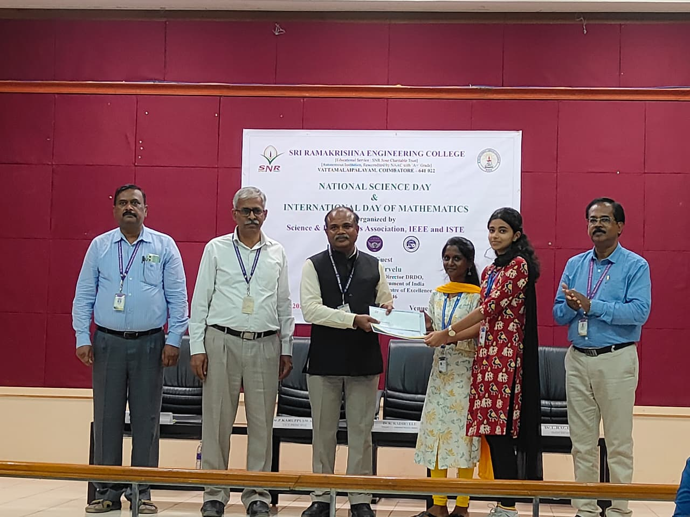
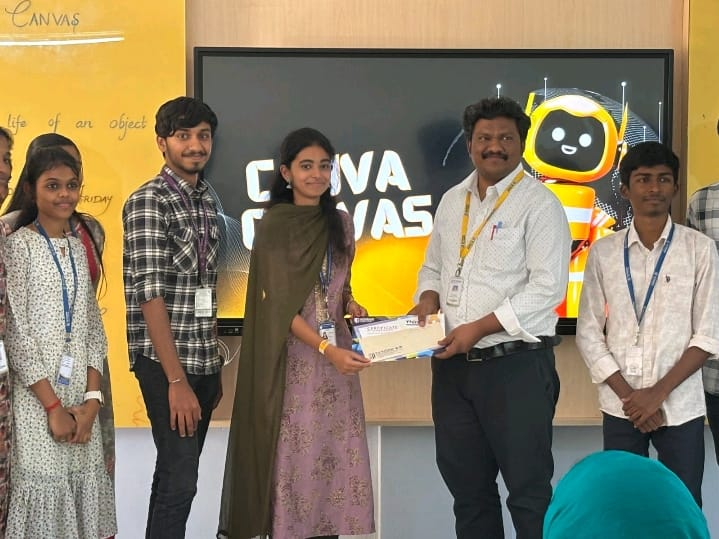
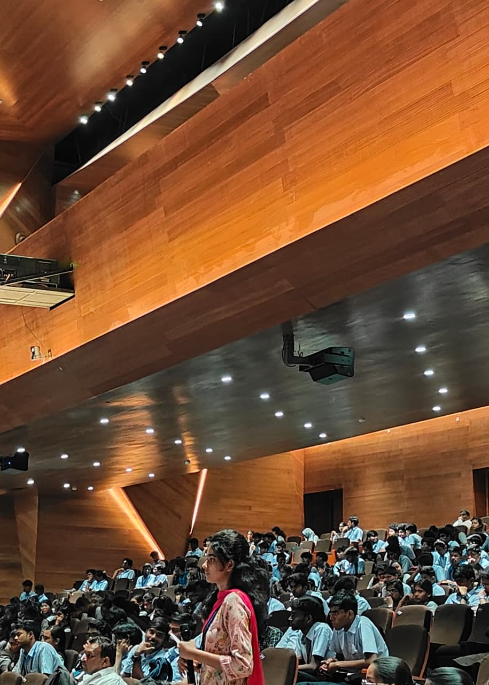

About Me
I am an Electronics and Instrumentation Engineering student with a strong interest in applying engineering principles to real-world problems. I enjoy working on practical projects and learning new technologies to improve my technical and professional skills.
Education
- BE – Electronics and Instrumentation Engineering, Sri Ramakrishna Engineering College, Coimbatore
- HSC – Suguna RIP V School, Coimbatore
- SSLC – St. Francis Anglo Indian Girls High School, Coimbatore
Achievements

First Prize – Poster Presentation (2024)

First Prize – Design Poster Presentation (2025)

Second Prize – Project Presentation (2025)
Paper & poster presentations at various institutions
Participation in SRM Hackathon (2024)
Extracurricular & Interests


- Volunteer leader – YI YUVA Club
- Organizer – Design Thinking Bootcamp
- Master of Ceremonies for college events
- Conference & club event organizer